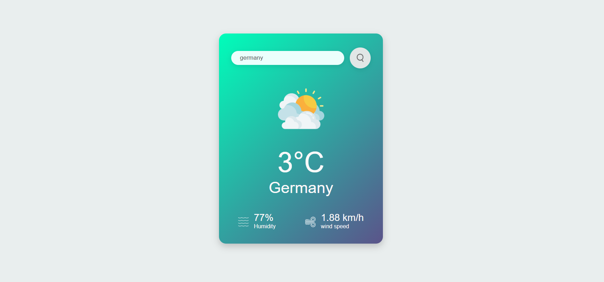

The Weather App is a small, focused front-end project that fetches live weather data from the OpenWeatherMap API
and presents it in a clean, accessible UI. It demonstrates asynchronous data fetching, graceful error handling,
responsive layout, and a polished interactive experience suitable for both mobile and desktop.

Users can search by city name to get current temperature, humidity, wind speed and a short weather description.
The app includes a loading state, descriptive error messages for unknown locations or network errors, and
small UI touches such as keyboard-accessible search, clear input behavior, and animated iconography.
Designed with a focus on clarity and usability: results are shown prominently with clear labels and units,
and the layout adapts so the app looks great on small screens and as a centered card on large screens.
Features
- City search: Type a city name and hit Enter or click search to fetch live weather data.
- Current conditions: Temperature (°C), humidity, wind speed, and a short description.
- Visuals: Weather icon + card UI with subtle gradient and responsive layout.
- Loading & error states: Clear feedback while fetching, and helpful messages for "city not found" or network issues.
- Keyboard accessibility: Search via Enter, Escape or Clear; focus states for better keyboard navigation.
- Small footprint: Vanilla JS (no frameworks), semantic HTML and CSS with accessible controls.
Tech / Implementation details
- HTML5 — semantic structure and accessible form controls
- CSS3 — responsive card layout and polished styling that matches the portfolio
- Vanilla JavaScript (ES6+) — fetch + async/await, DOM updates and keyboard handlers
- OpenWeatherMap API — current weather endpoint; API key stored in script (for production store on server)
- Progressive UX — loading indicator, debounce input (optional), and friendly error messages
- Deployed on GitHub Pages — instant demo hosting